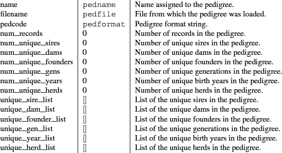
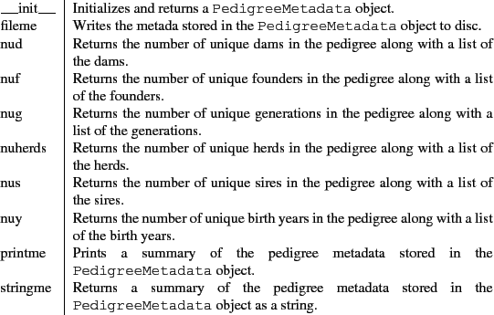

|
 |
 |
A Manual for use of PyPedal
A software package for pedigree analysis |
 |
 |
 |
6.3 The PedigreeMetadata Class
The PedigreeMetadata class stores metadata about pedigrees. This helps improve performance in some procedures, and also makes it easy to access useful summary data. Metadata are collected when the pedigree is loaded and accessed by many PyPedal routines.
Attributes of
PedigreeMetadata objects.
Attribute & Default & Description

example.metadata = PedigreeMetadata(example.pedigree,example.kw)
The methods of PedigreeMetadata objects are listed in Table 6.10. The couting methods (nud, nuf, etc.) return two values each, a count and a list, and new couting methods may easily be added.
Methods of
PedigreeMetadata objects.
Method & Description

Release 2.0.3, documentation updated on November 29, 2005
Revised May 15, 2012.
See About this document... for information on suggesting changes.